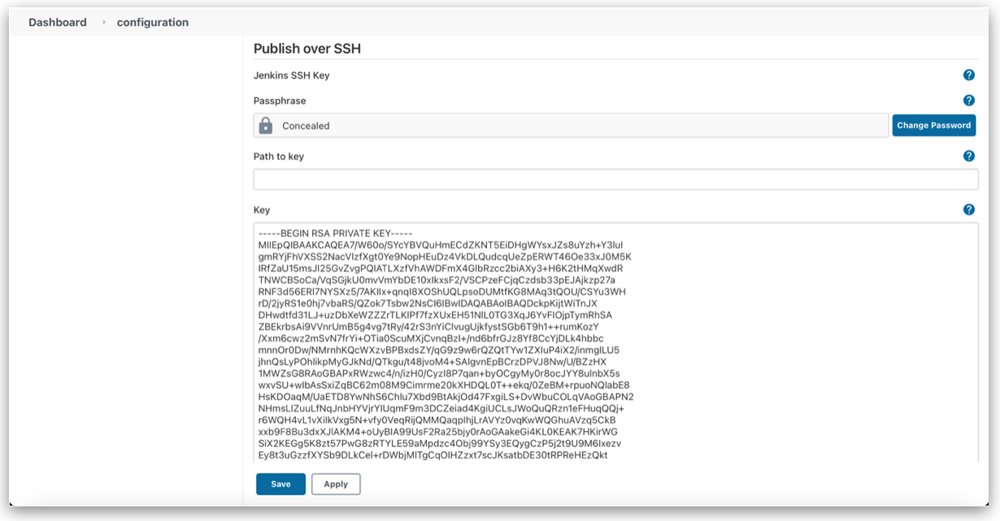
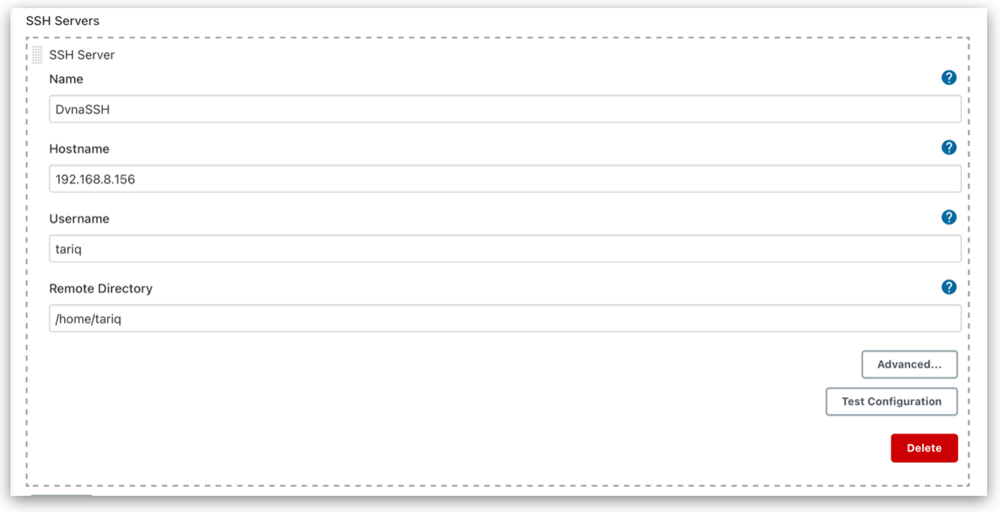

SSH Connection between VMs
Objective
In this section, we will enable SSH communication between the 2 VMs.
About SSH
- SSH provides a secure encrypted channel between two hosts over an insecure network.
- This connection can also be used for terminal access, file transfers, and for tunneling other applications.
- It uses public/private key pair. The public key can be given to everyone. The private key is kept secret and used to authenticate the user trying to establish a connection.
Prerequisites
- VMs running Ubuntu 18.04 LTS.
Generating SSH Keys
Generate SSH keys in the Jenkins VM using ssh-keygen. The encryption algorithm I used is ed25519, which is generally much faster than RSA and provides the same level of security with significantly smaller keys. Consequently, two files are generated; id_ed25519 and id_ed25519.pub. The former contains the private key, while the public key is present in the latter.
ssh-keygen -t ed25519 -m PEM
You will be prompted to add a passphrase. You can either provide one or leave it empty.
Copying SSH Key
Copy the public key from Jenkins server (id_ed25519.pub) into '.ssh/authorized_users' file of Production servers.
ssh-copy-id -i ~/.ssh/id_ed25519 <username>@<production_server_ip>
Copy the .ssh folder in Jenkins server into /var/lib/jenkins of the same server and change the ownership of the folder from root to jenkins. This is because jenkins user executes commands. Also, change the permissions of the /var/lib/jenkins/.ssh to only-read mode for owner (ie. user 'jenkins')
sudo cp -r ~/.ssh /var/lib/jenkins
sudo chown -R jenkins:jenkins /var/lib/jenkins/.ssh
sudo chmod 400 /var/lib/jenkins/.ssh
Test SSH Connection
Use ssh command to successfully login to the other server without being prompted for a password. Test SSH connection as user jenkins.
sudo su - jenkins
ssh <username>@<ip_address_of_server>
Jenkins remote SSH
Install Publish over SSH plugin.
Go to Dashboard → Manage Jenkins → Configure System → Publish over SSH. Add the path to the private SSH key of Jenkins server or copy the private SSH key into the input field.

Add SSH server details. Give the Production servers hostname (IP address), username for logging in and remote directory (/home/tariq).

You should now be able to run remote SSH commands via Jenkins pipeline.